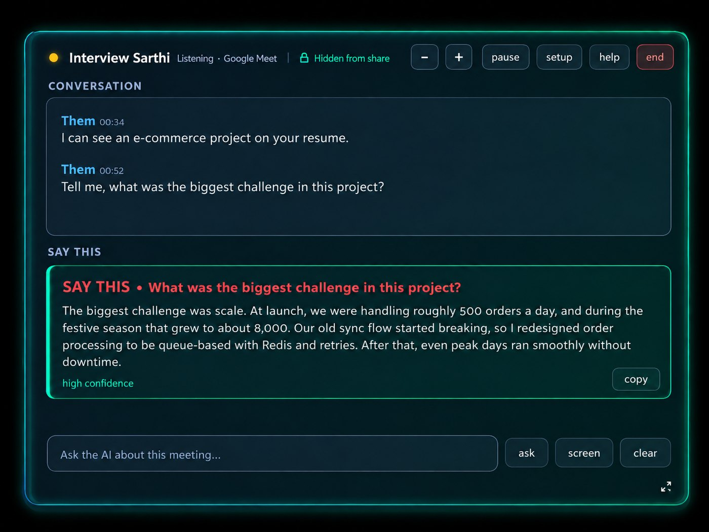

Home › AI interview assistants in India: what to check before choosing
AI interview assistants in India: what to check before choosing
An AI interview assistant helps you work with interview questions and answers. The right kind depends on whether you need independent practice, feedback, or help during a call where assistance is allowed.
Live assistance, mock interviews and preparation are different
A live assistant listens during a call and suggests responses. A mock interviewer asks practice questions and may evaluate your answers. A preparation library supplies examples to study. Check which workflow a product actually provides before buying it.
Who can benefit from resume-grounded help?
Freshers can rehearse project explanations. Experienced candidates can organise examples of decisions and outcomes. Candidates returning after a gap can practise a clear introduction. Resume grounding means using the experience you supplied as context; it does not guarantee that every generated statement is accurate.
What matters for Indian interviews
- Language: test an English question, a Hindi question and a sentence that switches between them. Check technical words and numbers, not only fluency.
- Payment: compare the total upfront amount, currency, taxes, recurring billing and supported payment methods.
- Time: distinguish minutes, credits, session caps and calendar-day passes. A long validity period does not necessarily mean unlimited usage.
- Device: check your operating system, call audio and headset before an important conversation.
- Privacy: identify who processes audio, where transcripts are stored and whether the AI provider uses submitted content.
How Interview Sarthi fits
Interview Sarthi is a Windows AI interview assistant for Indian job seekers, with resume-grounded assistance and English, Hindi and Hinglish support. It uses your Google Gemini key and can support a mock call with a friend or permitted live assistance. It does not include a standalone mock-interviewer suite or resume builder.

The trial is 30 minutes per computer with all features and no card. Paid access starts at ₹99 for 2 days; see all current passes and product facts. Gemini quotas and any paid API usage are separate.
A practical trial before you pay
- Choose a project you can explain without AI. Write down the facts the answer must preserve.
- Run a mock call on the meeting platform and Windows computer you intend to use.
- Ask a follow-up in Hinglish, then ask it again in English.
- Check whether the draft preserves your role, dates, numbers and limitations. Reject invented achievements.
- Review the transcript and practise answering without the draft.
Compare tools on evidence
Our AI assistant comparison separates verified vendor statements from unknowns. For a specific choice, see OphyAI, Cluely or Final Round AI. Language help belongs in the Hinglish preparation hub.
Check permission and data handling
Read the employer's instructions before using assistance during an interview. See the interview rules guide and our privacy policy. Screen-capture behavior does not determine whether assistance is permitted.